導論：CNN 對上 flatten-MLP
▼這一章在講什麼：影像不該先被壓成一條長向量
影像是高維、又很有空間結構的資料：隔壁像素通常長得很像、彼此相關。如果你硬把一張圖丟進全連接網路（MLP），第一步往往是把 $H\times W$ 的影像拉平（flatten）成一條超長向量。這一拉，二維鄰居關係就沒了——網路把左上角和右下角的像素當成「同等距離、同等相關」，當然很難學會邊緣、紋理、物件部件這類局部特徵。
卷積神經網路（CNN）就是為了解這個痛而設計的：它直接在原本的二維格子上運算，用小小的濾波器在影像上滑來滑去，把局部圖案抓出來。更形式地說，CNN 可以看成全連接網路的特例，只是動了兩個結構開關：
- 稀疏連接（sparsity）：每個輸出單元只看輸入的一小塊鄰居，不是整張圖。
- 權重共享（weight sharing）：每一小塊都用同一組權重去掃——左邊的邊緣偵測器和右邊用同一套。
這樣做有三個立刻看得見的好處。參數量大幅下降；模型自帶先驗「邊緣、角落這類局部圖案到處都可能出現」；還會帶來平移等變性（translation equivariance）——輸入平移一點，輸出特徵圖也跟著平移一點（注意：這是「跟著走」，不是後面池化才講的「平移不變」）。
本章路線圖：從 LeNet 一路走到現代架構
跟著這張地圖走就不會迷路：
- §2 LeNet 與典型 CNN：福島邦彥的 neocognitron、LeCun 的手寫數字網路，以及「先卷積／池化、最後全連接」這條骨架。
- §3 卷積層內部三階段：卷積 → 偵測器（激活）→ 池化；這是本章最核心的零件課。
- §4 權重初始化：濾波器不是隨便亂填，初始化會影響訓不訓得起來。
- §5 里程碑架構：AlexNet、VGG、Inception／GoogLeNet、U-Net、ResNet、DenseNet 等。PyTorch 實作對照見 Chap. 22。
口語小結：MLP 先 flatten 等於把空間關係丟掉；CNN 用稀疏＋共享在原圖上滑濾波器，又省參數又有平移等變性。 下一張卡片就從史上最經典的 LeNet 講起。
🤖 AI 生圖提示詞
WHAT（骨架）: 左右對比同一張 4×4 影像。左（紅）：flatten 把格子拉成一條長向量，再接全連接「人人握手」；左上紅格與右下藍格被畫成同等距離。右（綠）：同一張圖上蓋兩枚同一顆 3×3 核（實線與虛線蓋印），標「稀疏：只看鄰居／共享：全圖同一套」。底部藍條寫 CNN＝打開稀疏＋共享兩個開關，並標平移等變（跟著走 ≠ 不變）。 WHY（因果或反直覺）: 影像的資訊在鄰居裡——邊緣、紋理都是局部圖案。MLP 第一步 flatten 等於把二維鄰居拆散，網路把左上與右下當成同等相關，局部特徵學不起來。CNN 不拉平，用小核在原圖滑；稀疏砍掉遠距連線、共享讓同一偵測器到處用。反直覺：CNN 的優勢不是魔法，是避免先把空間關係丟掉。 MUST show（必備要素）: ① 左 4×4 影像 → flatten 長向量 → 稠密全連接；② 左上紅格 vs 右下藍格被當成同等距離；③ 右同一 4×4 上兩處 3×3 核蓋印（共享）；④ 「稀疏／共享」標註；⑤ 底部「兩個開關」與平移等變句；⑥ 反直覺句。 AVOID（禁止）: 不要畫成編號圓圈流程圖；不要出現 LaTeX 反斜線；不要讓左右影像長得不一樣；不要把平移等變畫成平移不變；不要漏掉 flatten 那一步。 STYLE: flat vector, viewBox 720×360, blue theme (#1e40af 深、#2563eb 主、#dbeafe 淺), 白底, Arial, 紅 flatten-MLP #e53e3e、綠 CNN #16a34a, 圓角、粗箭頭、無陰影、無漸層。
把影像 flatten 再送進全連接 MLP，最主要的問題是？
相對於標準全連接層，卷積層的兩項結構改動是？
平移等變性（translation equivariance）的意思是？
本章核心零件課（卷積／激活／池化）對應哪一節？
LeNet 與典型 CNN 骨架
▼從 neocognitron 到 LeNet：CNN 怎麼變成手寫數字的標準答案
CNN 的故事不是 2012 才開始。1980 年福島邦彥（Kunihiko Fukushima）提出 neocognitron，已經有「分層、局部感受野」的味道。大約 1989 年，Yann LeCun 帶領的團隊把這套想法改造成手寫數字辨識網路；1998 年 LeCun、Yoshua Bengio 等人再改進，模型以 LeCun 為名，叫做 LeNet。同一篇論文還交出機器學習界超有名的基準資料集：MNIST（Modified NIST）——28×28 的手寫數字 0–9。
課本 Fig. 1 那條管線（這裡不貼圖，用尺寸把它講清楚）
課本 Fig. 1 畫的就是 LeNet。你可以把它背成一條「先抽特徵、再分類」的流水線：
- 卷積：輸入影像經過卷積，得到 $28\times 28$、6 個通道的特徵圖。
- 池化／下採樣：空間尺寸砍半成 $14\times 14$，通道數仍是 6。
- 再卷積：得到 $10\times 10\times 16$ 的特徵圖。
- 再池化：壓成 $5\times 5$（16 通道）。
- 拉平＋全連接：特徵圖 reshape 成向量，依序通過 120 → 84 → 10 顆神經元的全連接層。最後 10 維對應數字類別 0 到 9。
口語版路線：$28\times 28\times 6$ → 池化 $14\times 14$ → $10\times 10\times 16$ → $5\times 5$ → FC 120-84-10。
為什麼後世還在抄這張骨架
「前面卷積＋池化抽空間特徵，後面全連接做分類」——這不是過時的考古，而是現代 CNN 的原型。後面你會看到 AlexNet、VGG 把這條管線加寬加深，但先局部掃描、再抽象決策的邏輯，幾乎都從 LeNet 這張圖長出來。
口語復盤：福島 1980 種下種子，LeCun 1989／1998 做成 LeNet 並帶出 MNIST；尺寸口訣 28×28×6 → 14×14 → 10×10×16 → 5×5 → 120-84-10。 下一張開始拆「卷積層裡面到底做了哪三件事」。
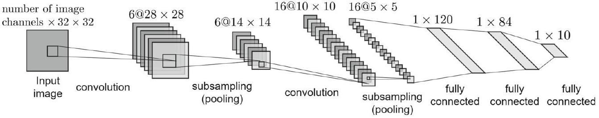
🤖 AI 生圖提示詞
WHAT（骨架）: 左大藍區用由大到小的特徵圖矩形表達 LeNet 空間收縮：28×28×6 → pool 14×14×6 → conv 10×10×16 → pool 5×5×16，尺寸本身就是訊息。右綠區是 flatten 之後才出現的 FC 120 → 84 → 10。底部紅條對照「若一開始就 flatten」。歷史一句：1980 福島 → 1989／1998 LeCun／MNIST。 WHY（因果或反直覺）: 常規 CNN 不是「一堆層隨便疊」，而是先在 2D 上用 conv／pool 抽局部特徵、縮小格子，最後才把空間丟掉交給全連接分類。反直覺：全連接不是主角——它出現得愈晚愈好；LeNet 的順序本身就是先驗。後世 AlexNet／VGG 只是把這條管線加寬加深。 MUST show（必備要素）: ① 四塊由大到小的特徵圖（28／14／10／5）；② conv／pool 交替標籤；③ 右 FC 120-84-10；④ flatten 發生在空間抽完之後；⑤ 底部「一開始 flatten 救不回」對照；⑥ neocognitron／LeNet／MNIST 一句。 AVOID（禁止）: 不要畫成編號圓圈流程圖；不要出現 LaTeX 反斜線；不要讓 FC 出現在 conv 之前；不要把四塊特徵圖畫成一樣大；不要漏掉 120-84-10。 STYLE: flat vector, viewBox 720×360, blue theme (#1e40af 深、#2563eb 主、#dbeafe 淺), 白底, Arial, 紅反例 #e53e3e、綠分類頭 #16a34a, 圓角、粗箭頭、無陰影、無漸層。
CNN 最早以 neocognitron 之名提出的是誰、大約哪一年？
MNIST 資料集是在哪個脈絡被引入的？
LeNet 特徵圖尺寸與通道的正確順序是？
LeNet 對後世「常規 CNN」最關鍵的啟發是？
卷積層三階段與 Prewitt 核
▼一層卷積不是一次乘法：裡面有三道工序
課本把「一個卷積層」拆成三個主要階段，後面小節會逐一放大，先把名字對上：
- 卷積階段（convolution stage）：用核（kernel／filter）在特徵圖上滑動，做局部加權求和。
- 偵測器階段（detector stage）：接激活函數，決定這個位置的特徵「有被點亮多少」。
- 池化階段（pooling stage）：做下採樣或局部彙總，讓表徵更穩、尺寸更小。
今天這張卡片先把第一階段講清楚：核裡的數字從哪來？
影像處理裡的濾波器：Prewitt 水平／垂直邊緣
回想傳統影像處理：不同任務用不同核——邊緣、角落、平滑、銳化。例如 Prewitt 濾波器的兩個 $3\times 3$ 核，分別抓水平邊緣與垂直邊緣（式 (1)）：
$$ \begin{bmatrix} 1 & 1 & 1 \\ 0 & 0 & 0 \\ -1 & -1 & -1 \end{bmatrix},\quad \begin{bmatrix} 1 & 0 & -1 \\ 1 & 0 & -1 \\ 1 & 0 & -1 \end{bmatrix} . \tag{1} $$
左邊那個核上下對比（上正下負），對水平向的邊緣敏感；右邊那個核左右對比，對垂直向的邊緣敏感。它們做的事情很明確：抽出跟邊緣有關的特徵。
關鍵轉折：核不要人刻，交給反向傳播學
問題是：分類或迴歸、不同資料集，最好的核不會長一樣。與其工程師手調這 9 個數字，卷積層乾脆把它們當成可學習權重。怎麼學？就是 Chap. 03 的反向傳播（backpropagation）：損失對核權重的梯度一層層傳回來，用梯度下降把濾波器調成「對這個任務、這份資料最有用」的樣子。
口語小結：一層 CNN ≈ 卷積＋激活＋池化；Prewitt 只是手刻邊緣核的例子；現代做法是把核當權重，用 Ch03 的 backprop 學出來。 下一張進入離散卷積的定義，以及實務上常常「不翻核」的互相關。
🤖 AI 生圖提示詞
WHAT（骨架）: 頂部一條因果帶：卷積（局部加權和）→ 偵測（激活點亮）→ 池化（局部摘要），用矩形因果鏈而非編號圓圈。下方左右對比：左紅是手刻 Prewitt 兩個 3×3（上正下負的水平核、左正右負的垂直核）加「鎖死」標籤；右綠是同一 3×3 改成 w11…w33，前向綠箭頭、反向紅箭頭從損失倒灌。底條：最好的核不會長一樣。 WHY（因果或反直覺）: 「一層卷積」不是一次乘法，裡面有三道工序。傳統影像處理用手刻核（Prewitt 抓水平／垂直邊緣）；分類任務換資料，那 9 個數字就不對了。關鍵轉折：把核當成可學習權重，用反向傳播改。反直覺：CNN 沒有發明新濾波器魔法，是讓 backprop 取代工程師手調。 MUST show（必備要素）: ① 頂部 conv→detector→pool 因果三塊；② 左 Prewitt 水平核 1/1/1、0/0/0、−1/−1/−1；③ 左 Prewitt 垂直核 1/0/−1 三列；④ 右 w11–w33 可學習格；⑤ 前向與反向兩支對向箭頭；⑥ 底條「別手調、交給 backprop」。 AVOID（禁止）: 不要畫成編號圓圈流程圖；不要出現 LaTeX 反斜線；不要把 Prewitt 畫成可學習成功路徑；不要漏掉三階段；不要把激活畫成另一顆獨立核。 STYLE: flat vector, viewBox 720×360, blue theme (#1e40af 深、#2563eb 主、#dbeafe 淺), 白底, Arial, 紅手刻 #e53e3e、綠可學習 #16a34a、橘轉折 #ea580c, 圓角、粗箭頭、無陰影、無漸層。
課本所稱一個卷積層的三個主要階段，正確順序是？
式 (1) 的兩個 Prewitt 核主要在做什麼？
卷積層為什麼不直接沿用手刻的 Prewitt 數值？
學習這些濾波器權重，課本指出使用的演算法是？
離散卷積與互相關
▼一維離散卷積：一邊滑、一邊乘加
離散卷積的定義長這樣（式 (2)）。輸出在位置 $t$ 的值，等於把訊號 $x$ 跟核 $w$ 對齊後逐點相乘再加總——注意課本把核寫成 $w$，求和指標 $a$ 只是「掃過所有位置」，跟輸出名稱 $a[t]$ 撞名，別被嚇到：
$$ a[t]=(x * k)[t]=\sum_{a=-\infty}^{\infty} x[a] w[t-a] . \tag{2} $$
$w[t-a]$ 裡的 $t-a$ 就是在做翻轉再平移：核先對時間軸翻過來，再滑到位置 $t$。
二維影像：兩個方向都卷一次
影像 $I$ 搭配二維核 $K$，卷積就在高、寬兩個空間軸上進行（式 (3)）：
$$ s[i, j]=(I * K)[i, j]=\sum_{m}\sum_{n} I[m, n] K[i-m, j-n] . \tag{3} $$
求和範圍理論上是 $(-\infty,\infty)$，實務上只加核蓋得到的那些格子；核外面可以想像成 0。核很小（例如 $3\times 3$、$5\times 5$）時，這就是在每個 $(i,j)$ 做一次局部乘加。
理論要翻核；實務 CNN 通常不翻
理論卷積會把其中一個訊號（通常是核）翻轉。但影像處理和 CNN 實作裡，核通常不翻——這個不翻的版本叫做互相關（cross-correlation）（式 (4)，$k$ 是核邊長）：
$$ s[i, j]=(I * K)[i, j]=\sum_{m=1}^{k}\sum_{n=1}^{k} I[m, n] K[m-i, n-j] . \tag{4} $$
對訓練來說這幾乎沒差：你若堅持翻核，網路就學會「翻過的那一版」；你若不翻，它就學會「沒翻的那一版」。梯度下降不在乎你的慣例叫卷積還是互相關，它只在乎這組數字能不能把損失壓下去。所以口語上大家還是說「卷積層」，程式裡多半在做互相關。
| 名稱 | 核要不要翻 | 特徵 |
|---|---|---|
| 理論離散卷積 | 要（$K[i-m,j-n]$） | 式 (2)(3)，訊號處理教科書定義 |
| 實務 CNN／互相關 | 通常不要 | 式 (4)；學習會自動適配慣例 |
口語復盤：卷積＝翻核再滑著乘加；CNN 框架多半省略翻轉、改做互相關；反正 backprop 會把核學成對的方向。 後面會看到稀疏與權重共享，把這個乘加變成「好省參數的全連接特例」。
🤖 AI 生圖提示詞
WHAT（骨架）: 左右同一顆 3×3 核（1–9）。左藍：理論卷積，核先轉 180° 變成 9…1，再滑過輸入；標 (f * k)[n] = Σ f[m] k[n − m]。右橘：實務相關，核不翻直接滑；標 (f ⋆ k)[n] = Σ f[m] k[n + m]。底部綠條：訓練會把核學成已翻過的版本，表達力相同。 WHY（因果或反直覺）: 數學上的離散卷積因為指標相減，必須先把核左右上下翻轉。深度學習函式庫為了實作方便，多半做互相關（不翻核）。反直覺：名字叫 conv2d 卻常是相關——因為核可學習，翻或不翻只差在學到的數字排列，表達力一樣。 MUST show（必備要素）: ① 左原核 1–9 與翻後 9–1（1 跑到右下）；② 「翻 180°」箭頭；③ 右核原樣不翻；④ 兩個公式用 * 與 ⋆、n−m vs n+m（Unicode，無反斜線）；⑤ 底部「學到的核自動是已翻版」；⑥ 反直覺句 conv2d ≈ 相關。 AVOID（禁止）: 不要畫成編號圓圈流程圖；不要出現 LaTeX 反斜線；不要把翻核畫成可有可無的裝飾；不要讓左右核數字相同卻說已翻；不要漏掉「訓練吸收翻轉」。 STYLE: flat vector, viewBox 720×360, blue theme (#1e40af 深、#2563eb 主、#dbeafe 淺), 白底, Arial, 橘相關 #ea580c、綠結論 #16a34a、紅警示 #e53e3e, 圓角、粗箭頭、無陰影、無漸層。
- 拉少數 $I$ 與 $K$ 格子，即時重算四個輸出。
- 按「重設課本預設」回到 $I$、$K$ 的預設整數。
式 (2) 中 $w[t-a]$ 相對於把核直接寫成 $w[t+a]$，凸顯的理論步驟是？
二維卷積式 (3) 的 $K[i-m, j-n]$ 代表？
實務 CNN 對「理論上要翻核」的常見作法是？
式 (4) 所描述、核不翻轉的運算名稱是？
稀疏連接與參數共享
▼全連接太「稠」：每個輸出都跟所有輸入握手
上一節把離散卷積的公式講完了，現在問一個很實際的問題：為什麼不用全連接層硬幹影像，而要改用卷積？ 答案有兩半——稀疏連接跟參數共享。原文 Fig. 2 把這兩種層畫在一起：左邊是密集層，右邊是卷積層。
全連接層裡，每一個輸出神經元都跟每一個輸入神經元相連。輸入有 $m$ 個、輸出有 $n$ 個，權重矩陣就是 $m\times n$ 那麼大，每個位置用一次就丟。影像一放大，這個數字會爆炸。
卷積層不這麼做。每個輸出神經元只看輸入的一塊局部區域（kernel 蓋到的那一小塊），所以連線是稀疏的。這件事剛好對上「賭稀疏會贏」（betting on sparsity）、也符合 Occam's razor：能用較少參數解釋資料，就不要用較多。稀疏權重矩陣的秩通常也比全連接來得低。
複雜度：$m n$ 對上 $k n$
令 $m$、$n$ 分別是輸入、輸出神經元數，$k$ 是 kernel 大小（且 $k\lt m$）。三種成本——執行時間、記憶體、參數個數——可以一起比：
- 全連接層：都是 $\mathcal{O}(m \times n)$。
- 卷積層：都降成 $\mathcal{O}(k \times n)$。
因為 $k$ 通常遠小於 $m$（例如 $3\times 3$ kernel 對上 $224\times 224$ 影像），省下的不是一點點。
⚠️ 一個會變回全連接的邊界：稀疏來自「kernel 比輸入小」。若 kernel 尺寸等於輸入尺寸，這層實質上就是全連接——每個輸出又把整張輸入看光了，稀疏優勢消失。卷積的好處不是魔法，是「局部感受野」換來的。
參數共享：同一顆 kernel 滑過所有位置
稀疏解決「連太多」；參數共享解決「每個位置都學一套新權重」。原文 Fig. 3 畫的就是這件事：kernel 的權重在所有空間位置共用——同一顆小濾波器一路滑過去，每個位置套同一組參數。
對比一下全連接：權重矩陣裡每個元素只用一次，專門負責「某一個輸入 → 某一個輸出」。卷積則相反：kernel 裡每個元素在每個空間位置都被重複使用。網路不是為每個像素學一套專屬濾波器，而是學一組能在整張圖上到處用的特徵偵測器。
口語復盤：全連接是每人跟大家握手（$\mathcal{O}(mn)$）；卷積是只跟鄰居握手（$\mathcal{O}(kn)$），而且握手的那隻手（kernel）全場共用。 Kernel 一旦跟輸入一樣大，握手又變回全場，稀疏就沒了。
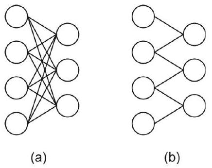
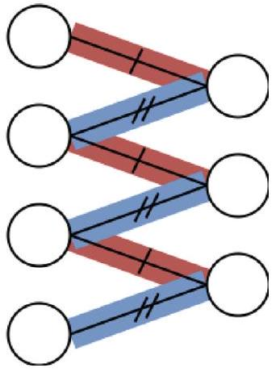
🤖 AI 生圖提示詞
WHAT（骨架）: 左右同一組 4 輸入／4 輸出節點。左紅：16 條全連接線交織，標 O(m n)，每個權重只用一次。右綠：只連局部鄰居（約 3 連線寬），並在連線上蓋三枚同一顆核 K 的印章（實線＋兩枚虛線「同 K」），標 O(k n)。底部橘條：kernel 一旦等於輸入尺寸，稀疏消失、變回全連接。 WHY（因果或反直覺）: 全連接影像會讓參數量爆成 m×n。卷積做兩件事：稀疏（每個輸出只看 k 格鄰居）把成本降成 k×n；參數共享（同一顆核滑過全圖）讓每個權重被重複使用，而不是每個位置各學一套。反直覺：好處不是魔法——kernel 跟輸入一樣大時，握手又變回全場。 MUST show（必備要素）: ① 左全連接義大利麵線；② 右僅局部連線；③ 至少三枚「同一 K」蓋印；④ O(m n) vs O(k n)；⑤ 底條「k＝輸入尺寸 → 變回密集」；⑥ 反直覺句。 AVOID（禁止）: 不要畫成編號圓圈流程圖；不要出現 LaTeX 反斜線；不要讓右圖也畫成全連接；不要漏掉共享蓋印；不要把 O(kn) 寫成 LaTeX \mathcal。 STYLE: flat vector, viewBox 720×360, blue theme (#1e40af 深、#2563eb 主、#dbeafe 淺), 白底, Arial, 紅稠密 #e53e3e、綠稀疏共享 #16a34a、橘邊界 #ea580c, 圓角、粗箭頭、無陰影、無漸層。
- 拉 $m$（16–1024）、$n$（8–256）、$k$（3–64），長條圖即時重畫。
- 把 $k$ 拉近 $m$ 的尺度，看差距縮小。
輸入 $m$、輸出 $n$ 時，全連接層與卷積層（kernel 大小 $k\lt m$）的參數量複雜度分別是？
什麼情況下卷積層會實質上變成全連接層？
卷積層的參數共享是指？
全連接層裡，權重矩陣每個元素的使用方式是？
平移等價性（不是不變性）
▼輸入挪一下，特徵圖也跟著挪——這叫等價，不是不變
卷積層還有一個常被講錯的性質：平移等價（translation equivalence），也有人寫成 equivariance。白話是：輸入平移，輸出特徵圖用同樣的方式跟著平移，特徵之間的相對空間關係被保住。原文 Fig. 4 畫的就是「兩個操作可以交換順序」。
請先把兩個詞分開，後面 KP-9 講池化時還會再碰到：
- 等價（equivalence）：先變換再處理 $=$ 先處理再變換。輸出跟著動。
- 不變（invariance）：輸入怎麼變，輸出幾乎同一個數字。輸出不動。
卷積是前者，不是後者。貓往右移兩格，特徵圖上的「貓」也往右移兩格——這正是等價。若是不變，特徵圖應該完全沒變，那就分不清貓在左邊還是右邊了。
式 (5)：$f$ 與 $g$ 可以換順序
形式化：函數 $f(x)$ 對函數 $g(x)$ 等價，意思是
$$ f(g(x))=g(f(x)). \tag{5} $$
把 $g$ 想成「平移」、$f$ 想成「卷積」，式 (5) 就是說下面兩條路走完結果一樣：
- 先平移輸入，再做卷積。
- 先做卷積，再平移結果。
同一顆 kernel 在每個位置都用同一組權重（上一節的參數共享），平移之後局部長相沒變，濾波器當然還是在對應的新位置給出同一個反應——所以兩條路會對上。
平移可以，旋轉、縮放不行
等價只對平移成立。旋轉、縮放這類變換，卷積沒有式 (5) 那種交換性：把圖轉 $90^\circ$ 再卷，跟先卷再轉 $90^\circ$，一般不會得到同一張特徵圖。實務上若要對旋轉、尺度比較穩，得靠資料增強、多尺度架構或其他模組，不是單靠標準卷積自動送你。
口語復盤：卷積對平移是等價（輸出跟著挪），不是不變（輸出保持原樣）；式 (5) 就是「平移再卷 $=$ 卷再平移」。旋轉、縮放不在這份保障裡。
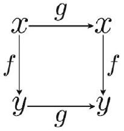
🤖 AI 生圖提示詞
WHAT（骨架）: 同一張輸入（貓在左）分兩路。上路 PATH A：先平移 g（貓到右）再卷積 f。下路 PATH B：先卷積 f 再平移 g。兩路匯合到同一張綠特徵圖，標 f(g(x))=g(f(x))。中間虛線框寫「等價 ≠ 不變」。底部左紅：旋轉 90° 再 conv ≠ conv 再旋轉。右藍：為什麼成立——參數共享。 WHY（因果或反直覺）: 卷積對平移是等價（輸出跟著走），不是不變（輸出數字不動）。因為每個位置用同一顆核，平移後局部長相不變，濾波器在新位置給同一反應，所以兩條路結果一樣。反直覺：若輸出完全不變，就分不清貓在左還是在右——那是後面池化才近似提供的性質。旋轉／縮放沒有這種交換性。 MUST show（必備要素）: ① 兩條路徑 translate-then-conv 與 conv-then-translate；② 匯合後同一結果（貓都在右）；③ 「等價 ≠ 不變」；④ 旋轉兩路不相等（≠）；⑤ 參數共享作為原因；⑥ 式 (5) 用 Unicode 等號、無反斜線。 AVOID（禁止）: 不要畫成編號圓圈流程圖；不要出現 LaTeX 反斜線；不要把等價畫成不變；不要讓兩路輸出長得不一樣；不要宣稱對旋轉也等價。 STYLE: flat vector, viewBox 720×360, blue theme (#1e40af 深、#2563eb 主、#dbeafe 淺), 白底, Arial, 綠等價通路 #16a34a、紅旋轉反例 #e53e3e, 圓角、粗箭頭、無陰影、無漸層。
卷積對平移具有的性質是？
式 (5) $f(g(x))=g(f(x))$ 用在卷積與平移上，意思是？
下列哪一項是卷積所不具備的？
「貓往右移，特徵圖上的反應也往右移」描述的是？
步幅、通道、填充與輸出尺寸
▼四個旋鈕：stride、width、channels、padding
卷積怎麼滑、滑完特徵圖多大，由幾個超參數決定。先把名詞對好，再看輸出尺寸公式。
Stride（步幅）：kernel 每次移動幾格。$s=1$ 是逐格滑；$s=2$ 會跳格，輸出空間尺寸較小。
Width（寬度）：通常同時指 kernel 的寬與高——kernel 多半是正方形。小 kernel 比較「盯中心」；大 kernel 把更廣的鄰居一起加進來。
Channels（通道）：這裡講的是 kernel 的深度，必須等於它要作用的輸入通道數。千萬別跟「卷積之後有幾張輸出特徵圖」搞混——那是有幾顆獨立的 kernel，不是單一顆 kernel 的深度。例如 RGB 圖有 3 個輸入通道，每一顆濾波器的深度就是 3；若你要 16 張輸出特徵圖，你需要 16 顆這樣的濾波器，不是把 kernel 深度設成 16。
Padding（填充）：在輸入外圍補一圈（或多圈）值，用來控制輸出空間尺寸、或保留邊界資訊。常見做法：
- Zero padding：補 0。
- Constant padding：補指定常數。
- Replicate padding：重複邊緣值。
- Reflect padding：沿邊界做鏡射。
- Circular padding：把輸入頭尾循環接起來。
完全不填充時，叫做 valid padding。Valid 的後果很直接：每次卷積輸出都會比輸入小一圈，疊很多層之後空間尺寸會一路縮小。
式 (6)：輸出空間尺寸
輸入寬（或高）為 $d$，kernel 寬為 $f$，單側 padding 為 $p$，stride 為 $s$。輸出特徵圖的空間尺寸是
$$ \text{Output Dimensions}=\left\lfloor\frac{d-f+2p}{s}+1\right\rfloor \times\left\lfloor\frac{d-f+2p}{s}+1\right\rfloor. \tag{6} $$
$\lfloor\cdot\rfloor$ 是向下取整。正方形輸入、正方形 kernel 時，寬與高用同一個式子。心算時可以記：有效覆蓋長度是 $d+2p-f$，再按步幅切成幾段，段數加 1 就是輸出邊長。
舉例：$d=5$、$f=3$、$p=0$、$s=1$（valid）→ $\lfloor(5-3+0)/1+1\rfloor=3$，輸出 $3\times 3$。若改 $p=1$，則 $\lfloor(5-3+2)/1+1\rfloor=5$，輸出與輸入同邊長（常見的「same」設定之一）。
原文 Fig. 5 與 Fig. 6：從單通道到多通道
原文 Fig. 5 是單通道輸入的卷積例子：一張平面 × 一顆平面 kernel，滑完得到一張特徵圖。Fig. 6 升級成三個輸入通道、兩顆濾波器——每一顆濾波器的深度都是 3（對齊輸入通道），兩顆濾波器產出兩張輸出特徵圖。看這兩張圖時，請對照上面那句：kernel 深度 $=$ 輸入通道數 $\neq$ 輸出特徵圖張數。
口語復盤：stride 管跳幾格，width 管看多寬，kernel 深度必須對齊輸入通道，padding 決定要不要補邊；valid 就是不補。輸出邊長用式 (6) 一次算完。
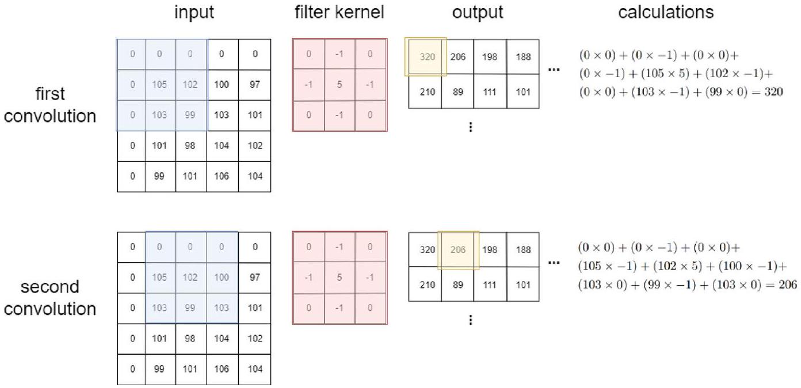
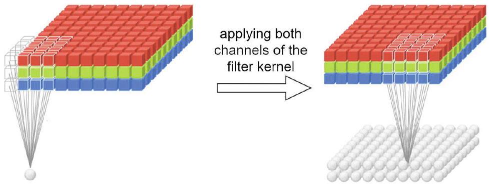
🤖 AI 生圖提示詞
WHAT（骨架）: 頂部公式 ⌊(d−f+2p)/s⌋+1，本圖 d=5、f=3、s=1。左紅：p=0 valid，5×5 輸入上貼 3×3 核，輸出縮成 3×3。右綠：p=1 灰圈 padding 圍住 5×5 原圖，核可對到邊界，輸出仍 5×5。底條補充 stride／通道／padding 種類，並寫 valid 不是比較正確。 WHY（因果或反直覺）: 核中心無法對到最外圈像素，所以不補邊時輸出必縮。單側補 p 格等於把有效覆蓋加回來；p=1、3×3、stride 1 時輸出與輸入同邊長（same）。反直覺：valid 只代表「不填充」，深網路一路 valid 會把空間吃光；padding 是保尺寸與保邊界資訊的開關，不是作弊。 MUST show（必備要素）: ① 公式用 ⌊ ⌋ 無反斜線；② 左 5×5→3×3 與算式 ⌊(5−3+0)/1⌋+1=3；③ 右灰 padding 圈 + 5×5 輸出、算式 =5；④ 3×3 核貼在輸入上；⑤ stride／通道旋鈕一句；⑥ valid≠比較正確。 AVOID（禁止）: 不要畫成編號圓圈流程圖；不要出現 LaTeX 反斜線（禁止 \lfloor）；不要讓左右輸出畫成一樣大；不要漏掉 padding 灰圈；不要把 kernel 深度畫成輸出張數。 STYLE: flat vector, viewBox 720×360, blue theme (#1e40af 深、#2563eb 主、#dbeafe 淺), 白底, Arial, 紅縮邊 #e53e3e、綠保尺寸 #16a34a, 圓角、粗箭頭、無陰影、無漸層。
- 拉 $d$、$f$、$p$、$s$（$s$ 下限鎖在 1），即時重算 $\mathrm{out}$。
- 試 $f>d$ 且 $p=0$，看「不合法」警告。
卷積核的「通道數 / 深度」應對齊的是？
式 (6) 中，輸入邊長 $d$、kernel 寬 $f$、padding $p$、stride $s$ 時，輸出邊長為？
所謂 valid padding 是指？
下列哪一項不是原文列出的 padding 方法？
偵測器與池化
▼偵測器階段：其實就是激活函數
LeNet 那條管線把卷積層拆成三站：卷積 → 偵測器（detector） → 池化。Detector 沒有新公式——它就是套上激活函數。之所以叫偵測器，是因為激活對「超過門檻的訊號」會亮起來。Chap. 2 講過的那些 $\sigma$ 在 CNN 裡照樣能用（ReLU 最常見）。
池化：對局部區域做摘要統計
池化也是一顆小窗在特徵圖上滑，但不做可學習的加權求和，而是對窗內數值算一個統計量。常見方法：
- Max pooling：取最大值。
- Average pooling：取平均。
- Weighted average pooling：取加權平均。
- Median pooling：取中位數。
- $\ell_2$-norm pooling：取該區域的 $\ell_2$ 范數。
參數跟卷積很像，同樣有 stride、width、channels、padding：
- Stride：窗每次走幾格。stride 小於窗寬 → 區域重疊；否則不重疊。
- Width：池化窗的空間大小，通常正方形。窗越大，摘要越「粗」。
- Number of channels：池化核深度對齊輸入通道；各通道通常分開池化。
- Padding：與 §3.1.5 同一套（zero / constant / replicate / reflect / circular）。
教科書 4×4 範例（數字照原文）
輸入訊號：
$$ \begin{bmatrix} 2 & 1 & 7 & 5 \\ 2 & 3 & 2 & 4 \\ 8 & -1 & -5 & 1 \\ 7 & 3 & 2 & 6 \end{bmatrix}. $$
Max pooling（stride 2、width 2）——不重疊的四塊，各取最大：左上 $\max(2,1,2,3)=3$，右上 $\max(7,5,2,4)=7$，左下 $\max(8,-1,7,3)=8$，右下 $\max(-5,1,2,6)=6$。
$$ \begin{bmatrix} 3 & 7 \\ 8 & 6 \end{bmatrix}. $$
Average pooling（stride 2、width 2）——四塊各取平均：$(2+1+2+3)/4=2$，$(7+5+2+4)/4=4.5$，$(8-1+7+3)/4=4.25$，$(-5+1+2+6)/4=1$。
$$ \begin{bmatrix} 2 & 4.5 \\ 4.25 & 1 \end{bmatrix}. $$
Median pooling（stride 2、width 2）——原文記錄的結果：
$$ \begin{bmatrix} 2 & 5.5 \\ 5 & 1.5 \end{bmatrix}. $$
同一張輸入再改 stride / 窗寬，輸出形狀會變。Max pooling、stride 1、width 2（窗重疊）得到 $3\times 3$：
$$ \begin{bmatrix} 3 & 7 & 7 \\ 8 & 3 & 4 \\ 8 & 3 & 6 \end{bmatrix}. $$
Max pooling、stride 1、width 3 得到 $2\times 2$：
$$ \begin{bmatrix} 8 & 7 \\ 8 & 6 \end{bmatrix}. $$
若先做 zero padding 再 max pooling（stride 2、width 2），原文把輸入補成 $6\times 6$ 的零框後，結果為
$$ \begin{bmatrix} 3 & 7 & 5 \\ 8 & 6 & 6 \\ 7 & 6 & 6 \end{bmatrix}. $$
口語復盤：detector = 激活；pooling = 對局部做 max / 平均 / 中位數 / $\ell_2$ 等摘要。 同一張 $4\times 4$，stride 2、width 2 時請把 max $[[3,7],[8,6]]$、avg $[[2, 4.5],[4.25, 1]]$、median $[[2, 5.5],[5, 1.5]]$ 記牢——這組數字後面驗算會用到。
🤖 AI 生圖提示詞
WHAT（骨架）: 中央同一張教科書 4×4（2 1 7 5／2 3 2 4／8 −1 −5 1／7 3 2 6），粗十字分成四塊 2×2。左紅 max 結果 3 7／8 6；右藍 avg 結果 2 4.5／4.25 1；底左綠 median 2 5.5／5 1.5。底右橘：池化是統計摘要不是可學習加權。強調三個 2×2 輸出沒有一格相同。 WHY（因果或反直覺）: 池化對局部做摘要統計，方法不同故事就不同。max 只留最強、丟掉負值與弱訊號；avg 讓 −5 把右下拉到 1；median 又是第三套數字。反直覺：輸入一模一樣，三種池化講的是三個故事——沒有「正確的那一種」，只有任務要的摘要。 MUST show（必備要素）: ① 中央 4×4 用原文數字；② 四塊 2×2 窗（stride 2 不重疊）；③ max 矩陣 3,7,8,6；④ avg 矩陣 2, 4.5, 4.25, 1；⑤ median 2, 5.5, 5, 1.5；⑥ 「同樣輸入、摘要不同」轉折句。 AVOID（禁止）: 不要畫成編號圓圈流程圖；不要出現 LaTeX 反斜線；不要改教科書數字；不要把池化畫成可學習核；不要漏掉三種結果對照。 STYLE: flat vector, viewBox 720×360, blue theme (#1e40af 深、#2563eb 主、#dbeafe 淺), 白底, Arial, 紅 max #e53e3e、綠 median #16a34a、橘警示 #ea580c、紫右下窗 #7c3aed, 圓角、粗箭頭、無陰影、無漸層。
- 拉「模式」滑桿（0＝Max、1＝Average），或按按鈕切換。
- 對照畫布上四色視窗與右邊 $2\times 2$ 輸出。
CNN 裡的 detector stage 指的是？
下列哪一項不是原文列出的池化方法？
對教科書 $4\times 4$ 輸入做 max pooling（stride 2、width 2），結果是？
同一輸入做 average pooling（stride 2、width 2），右上與左下的值是？
池化：局部平移不變性與下採樣
▼池化為什麼不怕「稍微挪一下」？
卷積找出的特徵，精確落在哪個像素上，常常沒那麼重要——有沒有這個特徵才重要。池化（pooling）把鄰近活化做摘要，因此對局部平移（local translation）近似不變。
Fig. 7 把這件事講得很具體：訊號往右平移一格之後，輸入的四個值全部改變；但做完 max pooling，只有兩個池化特徵改變，另外兩個維持原樣（圖中虛線標出沒變的值）。也就是說，小位移會改寫整塊輸入，卻不一定改寫池化後的摘要。
多數任務：在不在，比在哪裡重要
多數應用樂見這種局部不變性。Fig. 8 的數字「5」就是典型例子：辨識任務要的是「圖裡有沒有 5」，不是「5 偏左還是偏右幾個像素」。把位置資訊稍微模糊掉，反而讓分類更穩。
但這不是萬靈丹。有些任務空間位置本身就是答案——例如判斷物件在左還是在右、量測距離、對齊關鍵點。這時池化引入的不變性會把位置資訊洗掉，變成負擔。記一句對照：平移等價是卷積的性質（KP-6），局部平移不變是池化的性質；要不要不變，看任務。
下採樣：空間變小，後面比較負擔得起
池化的第二個角色是下採樣（downsampling）。當 stride 大於 1，特徵圖的空間尺寸會縮小；stride $=2$ 大約把高、寬各砍半。後續層要處理的格子變少，計算量下降；接到全連接時，可學習參數也跟著變少，有助於控制複雜度、改善泛化。
LeNet（Fig. 1）就是「卷積抽特徵 → 池化縮小」反覆堆疊的原型。Fig. 9 另給一個下採樣示意：池化核在空間上跨步走，輸出比輸入疏。
口語復盤：池化 ≈ 局部摘要。 小平移後輸入全變、池化特徵往往只變一部分（Fig. 7）；多數時候「有沒有」重於「在哪裡」（Fig. 8），但位置關鍵的任務要小心。stride $\gt 1$ 把圖縮小，後面算得起、參數也比較少（Fig. 9）。
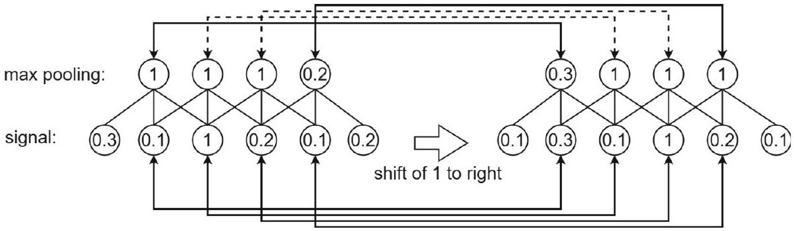
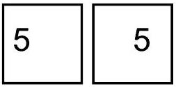
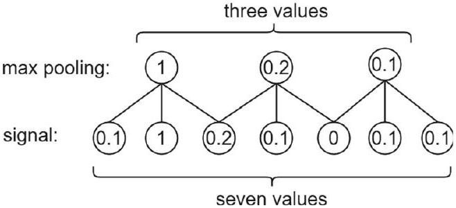
🤖 AI 生圖提示詞
WHAT（骨架）: 左藍原圖上排 1 3 | 8 2 與 4 2 | 1 6，max=4 與 8；並註下排池化 9 與 4。右移一格後左側補 0，上排輸入全改但 max 仍是 4 與 8（綠虛線框＝沒變）；下排 9→5、4→9（改了）。底部左綠：「有沒有」重於「在哪裡」；右紅：位置任務有害，並對照 conv 等價 vs pool 不變。 WHY（因果或反直覺）: 小位移會改寫幾乎整塊輸入，但 max 只關心窗內最強值——只要那個高峰還在窗裡，摘要就不動。反直覺：輸入「全變了」不代表特徵沒了；池化讓分類對幾個像素的偏移不敏感。這不是萬靈丹：任務若問「在左還是在右」，這種不變性會洗掉答案。 MUST show（必備要素）: ① 原圖與右移一格後的格子；② 上排兩個 max 維持 4 與 8（虛線未變）；③ 下排兩個 max 改變；④ 「有沒有 vs 在哪裡」；⑤ 位置任務反例；⑥ conv 等價 vs pool 不變對照。 AVOID（禁止）: 不要畫成編號圓圈流程圖；不要出現 LaTeX 反斜線；不要讓移位前後池化結果全部相同或全部不同；不要把平移不變寫成卷積的性質。 STYLE: flat vector, viewBox 720×360, blue theme (#1e40af 深、#2563eb 主、#dbeafe 淺), 白底, Arial, 紅移位／有害 #e53e3e、綠穩定 #16a34a、橘 after #ea580c, 圓角、粗箭頭、無陰影、無漸層。
Fig. 7 用什麼現象說明池化對局部平移較穩健？
Fig. 8 想強調的辨識觀點是？
什麼情況下，池化帶來的局部平移不變性可能有害？
池化做下採樣（例如 stride $=2$）的主要效益是？
無限強先驗、動態池化與 GAP
▼無限強先驗：直接把某些權重釘成 0
卷積與池化都可以看成對權重加了無限強先驗（infinitely strong prior）。Fig. 10 把約束強度排成三級：弱先驗、較強先驗、無限強先驗——最後一檔等於直接把某些權重設成 0，不讓模型去學它們。
這來自前面講過的稀疏性（Fig. 2、§3.1.2）：每個輸出只看局部感受野，其餘連線根本不存在。這種內建稀疏呼應「押注稀疏」（betting on sparsity）——高密度時沒有方法能處處表現好，所以選在稀疏假設下會表現好的程序——也符合奧卡姆剃刀：較簡單的解通常較可能是對的。
動態池化：不一定綁死在固定鄰域
池化不必永遠對「空間上剛好相鄰」的格子做。動態池化（dynamic pooling） 可以依內容或結構決定誰跟誰一起摘要。例如對顯著特徵的位置做 K-means，同一群的特徵再池化——每個輸入的池化區域可以不一樣。另一條路是訓練時學一套固定的池化結構，之後對所有樣本共用。
輸入尺寸不一定要砍成同一張圖
標準 CNN 常假設輸入寬高固定。實務上每張圖大小不同，硬裁切或 zero padding 會丟掉資訊。比較彈性的做法是用池化去遷就尺寸：
- Fig. 11：依輸入大小調整池化核寬——大圖用較寬的核、小圖用較窄的核，讓輸出對齊到同一空間尺寸。
- 空間金字塔池化（spatial pyramid pooling, SPP）：把最後一層池化換成一組固定數量的箱子（bins），箱子會隨輸入縮放。這樣 CNN 可以吃任意尺寸，不必先 resize／crop。
全域平均池化：結尾不一定要接巨大全連接
現代 CNN 常在網路末端用 全域平均池化（global average pooling, GAP） 取代全連接層：每張特徵圖壓成一個數，再接到類別。參數大幅減少，也強迫「一張特徵圖對應一個語意／類別」的直接對應。
口語復盤：卷積／池化 = 把很多權重強制為 0 的無限強先驗（Fig. 10）。 池化區可以動態決定；核寬或 SPP 能吃不同尺寸（Fig. 11）；結尾用 GAP 常比巨型 FC 更乾淨。
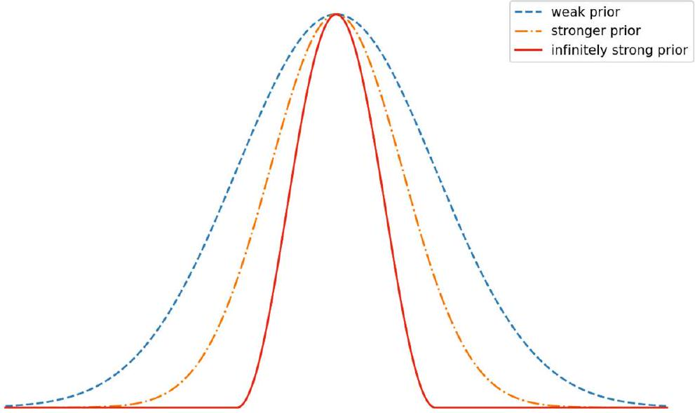
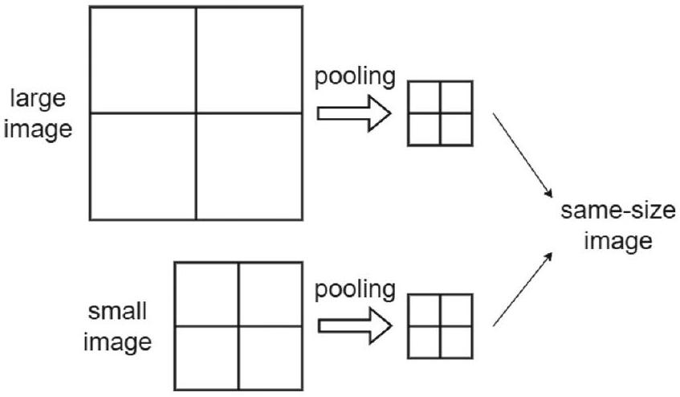
🤖 AI 生圖提示詞
WHAT（骨架）: 三欄先驗強度對比同一張權重矩陣。左弱：整張藍、處處可學（全連接）。中較強：中間有值、四周標「小」，L1／權重衰減可被梯度救回。右無限強：多數格寫紅 0，只留一條局部對角帶 w——連線不存在。底部左：GAP 把 H×W×C 壓成 C 維取代巨型 FC，並提 SPP。底部右：不能學有時更好。 WHY（因果或反直覺）: 卷積／池化不是「比較會抓特徵」這麼軟，而是結構上把遠距權重強制為 0，梯度改不到它們。這比 L1 更狠——L1 只是往 0 推，無限強先驗是連線根本沒有。反直覺：限制模型能力（押注稀疏）反而泛化更好；GAP 把同一先驗用到網路尾巴，省掉巨大全連接。 MUST show（必備要素）: ① 弱／較強／無限強三張權重矩陣；② 右圖大量紅 0 與局部 w 帶；③ 「連線不存在＝權重就是 0」；④ GAP 箭頭 H×W×C → C 維；⑤ 反直覺「不能學有時更好」；⑥ 無限強≠普通正則項。 AVOID（禁止）: 不要畫成編號圓圈流程圖；不要出現 LaTeX 反斜線；不要把三欄矩陣畫成一樣滿；不要把無限強畫成還能被梯度救回；不要漏掉 GAP。 STYLE: flat vector, viewBox 720×360, blue theme (#1e40af 深、#2563eb 主、#dbeafe 淺), 白底, Arial, 紅強制 0 #e53e3e、綠 GAP #16a34a、橘較強先驗 #ea580c, 圓角、粗箭頭、無陰影、無漸層。
無限強先驗（Fig. 10）在卷積／池化裡實際做了什麼？
動態池化與固定局部鄰域池化的差異是？
Fig. 11 與空間金字塔池化（SPP）分別如何處理可變輸入尺寸？
全域平均池化（GAP）放在現代 CNN 末端，主要取代什麼？
權重初始化：隨機、Xavier／He 與 PCA
▼卷積核就是權重，訓練前一定要先賦值
CNN 的權重就是卷積核（kernel / filter）裡的數值。訓練目標仍是把損失壓低；主力優化器是 Chap. 3 的反向傳播——梯度下降加上鏈式法則。因為它是迭代算法，優化變數（權重）必須在訓練開始前初始化，否則沒有起點可走。
常見路線有三條：隨機初始化、Xavier／Glorot 與 He 這類「顧變異數」的隨機法，以及用非監督方法（例如 PCA）先學一組核。近代實務以前兩類為主；純高斯／均勻亂數已較少當預設。
隨機初始化：和隨機投影、Johnson–Lindenstrauss 有關
權重可從高斯或均勻分布抽。太大容易梯度爆炸，太小容易梯度消失——前向活化與反向梯度都會在層與層之間失控。
這件事和 Chap. 2 的觀點接得上：一層權重可看成線性變換的投影矩陣；隨機初始化就對應隨機投影（random projection）。Johnson–Lindenstrauss 引理說：隨機投影能以高機率近似保留成對距離（誤差有界）。這提供一個理論理由，解釋為什麼「隨便抽一組不太大也不太小的權重」往往是堪用的起點——前饋網路與 CNN 都適用。
顧變異數：Xavier／Glorot 對 tanh／sigmoid，He 對 ReLU
要讓各層活化與梯度的變異數大致平衡，實務上改用：
- Xavier／Glorot 初始化：配合 tanh、sigmoid 這類飽和型激活。
- He 初始化：配合 ReLU（以及其變體）。
它們依扇入／扇出縮放初始變異數，減輕消失／爆炸。純隨機高斯或均勻初始化在現代深度網路裡已不常當預設。
非監督初始化：平移過的 patch 做 PCA
也可以先不靠標籤。把一層權重切成與核步幅 $s$ 對應的 patch；為了讓特徵對小位移穩健，每個 patch 再稍微平移幾個像素，原 patch 與平移後的一起收集，拉成行向量，送進 PCA。
PCA 得到 $s \times s$ 的特徵向量矩陣，用來取代該層的 patch 權重——這些特徵向量就是這一層的初始核。對小平移較不敏感的特徵，會被 PCA 優先抓出來。同一流程可逐層重複，用非監督方式初始化整座 CNN 的卷積核。
口語復盤：核 = 權重，沒賦值 backprop 走不了。 亂數起點連到隨機投影／JL；太大爆炸、太小消失。tanh／sigmoid 用 Xavier，ReLU 用 He。想用資料先行：平移 patch → PCA → $s\times s$ 特徵向量當核。
🤖 AI 生圖提示詞
WHAT（骨架）: 三欄同一條「三層傳遞」。左紅：圓愈來愈大，最底標 NaN（太大爆炸）。中橘：圓愈來愈小，最後幾乎看不見（太小消失）。右綠：三個同半徑圓（He／Xavier 保變異數）。底部左：Xavier 配 tanh／sigmoid、He 配 ReLU。底部右：隨機投影／JL，以及 PCA patch 備案。 WHY（因果或反直覺）: 卷積核就是權重，backprop 是迭代法，沒初值就沒起點。太大則每層把活化與梯度乘爆，太小則乘沒、深層收不到訊號。Xavier／He 依扇入扇出設定初始變異數，讓各層尺度差不多。反直覺：純隨機不是瞎猜——Johnson–Lindenstrauss 說隨機投影能近似保距，所以「不太大也不太小的亂數」常常堪用。 MUST show（必備要素）: ① 三欄圓形尺度對比（變大／變小／不變）；② 爆炸標 NaN；③ Xavier＝tanh／sigmoid、He＝ReLU；④ 「核＝權重」標題因果；⑤ JL／隨機投影一句；⑥ 反直覺句。 AVOID（禁止）: 不要畫成編號圓圈流程圖；不要出現 LaTeX 反斜線；不要把 He 標成給 sigmoid、Xavier 標成給 ReLU；不要讓三欄圓一樣大；不要漏掉爆炸與消失兩邊。 STYLE: flat vector, viewBox 720×360, blue theme (#1e40af 深、#2563eb 主、#dbeafe 淺), 白底, Arial, 紅爆炸 #e53e3e、橘消失 #ea580c、綠平衡 #16a34a, 圓角、粗箭頭、無陰影、無漸層。
CNN 裡「必須先初始化再做反向傳播」的原因是？
隨機初始化與 Johnson–Lindenstrauss 引理的關係是？
關於初始值大小與現代初始化方法，下列何者正確？
非監督初始化中，PCA 產出什麼來當卷積核？
ImageNet、ILSVRC 與 AlexNet
▼從競賽場地講起：ImageNet 與 ILSVRC
後面幾節會依序碰到 VGG、Inception／GoogLeNet、U-Net、ResNet、DenseNet——它們多半在 ImageNet 大規模視覺辨識挑戰（ILSVRC） 上較勁，而且一代疊一代。這一節先把場地與第一個引爆點 AlexNet（2012） 講清楚。
ImageNet 約有 1500 萬 張標註高解析影像、約 22,000 個物體類別，圖片從網路上蒐集，以 Amazon Mechanical Turk 人工標註。
2010 年起，每年舉辦的 ILSVRC 成為影像分類與物件偵測的指標基準。它是 ImageNet 的精選子集：約 120 萬 張高解析圖、1000 類、每類約 1000 張；影像為 RGB，解析度 $224\times 224$。
AlexNet：八層、雙 GPU、把深度學習打進電腦視覺
AlexNet 由 Krizhevsky 在 Hinton 指導下提出（Sutskever 共同作者），拿下 ILSVRC 2012，常被視為深度學習在影像領域爆發的起點。架構見 Fig. 12：八層——五層卷積再接三層全連接，骨架明顯承襲 LeNet。當時單卡約 3 GB 顯存不夠用，網路拆到兩張 GPU 上，既塞得下也加快訓練。
各層規模（依原書）：
- 第 1 層：輸入 $224\times 224\times 3$，96 個核，尺寸 $11\times 11\times 3$，stride 4。
- 第 2 層：256 個核，尺寸 $5\times 5\times 48$。
- 第 3 層：384 個核，尺寸 $3\times 3\times 256$。
- 第 4 層：384 個核，尺寸 $3\times 3\times 192$。
- 第 5 層：256 個核，尺寸 $3\times 3\times 192$。
- 第 6、7 層：全連接，各 4096 個神經元。
- 第 8 層：全連接輸出 1000 個神經元（一類一個）。
除了最後一層用 softmax 做 1000 類分類，其餘層用 ReLU，實務上加快收斂。全網路約 6000 萬 參數、65 萬個神經元。ILSVRC 2010 上 top-1／top-5 錯誤率分別為 37.5% 與 17.0%。
局部響應正規化（LRN）與重疊池化
第 1、2 層在 ReLU 之後做 局部響應正規化（local response normalization, LRN），有助泛化。令 $a_{x,y}^{i}$ 為核 $i$ 在位置 $(x,y)$ 的 ReLU 輸出，$N$ 為該層核數，正規化為（式 (7)）：
$$ b_{x,y}^{i}=\frac{a_{x,y}^{i}}{\bigl(k+\alpha\sum_{j=\max(0,\,i-n/2)}^{\min(N-1,\,i+n/2)}\bigl(a_{x,y}^{j}\bigr)^{2}\bigr)^{\beta}}, \tag{7} $$
求和範圍是同一空間位置上、鄰近的 $n$ 張特徵圖。交叉驗證得到的超參數：$k=2$，$n=5$，$\alpha=10^{-4}$，$\beta=0.75$。
第 1、2、5 層之後做 max pooling；第 1、2 層是 LRN 之後再池化。池化核寬 3、stride 2，因此是重疊池化（overlapping pooling）。
損失：多項邏輯迴歸
對樣本 $\boldsymbol{x}_{i}$、目標類別 $\ell$，網路最大化第 $\ell$ 個 softmax 神經元的輸出機率；訓練改寫成最小化問題（式 (8)）：
$$ \max_{\theta}\mathbb{P}(y_{i}=\ell)=\frac{e^{o_{\ell}}}{\sum_{j=1}^{1000}e^{o_{j}}}\quad\Longrightarrow\quad\min_{\theta}\bigl(-\mathbb{P}(y_{i}=\ell)\bigr)=-\frac{e^{o_{\ell}}}{\sum_{j=1}^{1000}e^{o_{j}}}, \tag{8} $$
其中 $o_{j}$ 是 softmax 前的第 $j$ 個輸出。箭號右邊把「最大化正確類機率」改成「最小化其負值」，以配合神經網路慣用的最小化訓練。
口語復盤：ImageNet 約 15M／22k 類；ILSVRC 子集約 1.2M／1000 類／$224\times 224$。 AlexNet 八層（5 conv + 3 FC）、雙 GPU、ReLU、LRN 式 (7)、重疊池化 3／2、約 60M 參數，損失是 1000 類多項邏輯迴歸式 (8)。
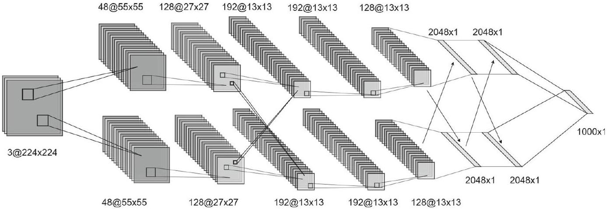
🤖 AI 生圖提示詞
WHAT（骨架）: 左灰小 LeNet（28×28 灰階、conv6／pool／conv16、FC 120-84-10、tanh 時代）。右藍放大為 AlexNet：conv1 96×11×11 stride 4、conv2 256×5×5、conv3–5 的 3×3 堆、FC 4096-4096-1000；旁綠雙 GPU 1／2；黃條 ReLU＋LRN＋重疊池化。底部：ImageNet／ILSVRC 場地，骨架仍是 LeNet。 WHY（因果或反直覺）: 2012 的爆發不是全新骨架，而是把 LeNet 加寬加深去打 224×224、1000 類。單卡 3GB 塞不下所以拆兩張 GPU；飽和激活換成 ReLU 才讓這麼深訓得動。反直覺：突破是「訓得動＋塞得下」，不是發明一種與 LeNet 無關的新哲學。 MUST show（必備要素）: ① 左小 LeNet vs 右大 AlexNet；② 5 conv + 3 FC；③ ReLU 標籤；④ GPU1／GPU2 對切；⑤ 11×11 stride 4 與 4096-4096-1000；⑥ ImageNet／1000 類與反直覺句。 AVOID（禁止）: 不要畫成編號圓圈流程圖；不要出現 LaTeX 反斜線；不要把 AlexNet 畫成與 LeNet 無關；不要漏掉雙 GPU 或 ReLU；不要寫成只有一層全連接。 STYLE: flat vector, viewBox 720×360, blue theme (#1e40af 深、#2563eb 主、#dbeafe 淺), 白底, Arial, 綠雙 GPU #16a34a、黃 ReLU #d69e2e、紅轉折 #e53e3e, 圓角、粗箭頭、無陰影、無漸層。
ImageNet 與 ILSVRC 子集的規模，下列何者正確？
AlexNet 的層數組成與硬體設定是？
式 (7) 局部響應正規化的超參數（交叉驗證）是？
AlexNet 的池化、參數規模與損失（式 (8)）下列何者正確？
VGG：3×3 小核堆疊出深度
▼VGG 在問什麼：深度到底有沒有用？
VGG 出自牛津大學 Visual Geometry Group。它要回答的問題很直：把網路明顯加深，能不能學到更複雜、更有層次的特徵？層數一多，可學習參數也暴增，過擬合風險跟著來——VGG 的對策是用更大的訓練集，而不是先把模型砍瘦。
可以把它想成「很多卷積層疊在一起的深 CNN」。設計哲學很執著：幾乎全程用很小的 $3 \times 3$ 卷積核。小核的好處是參數比較好控、比較不容易過擬合——對很深的網路特別重要。少數地方會插 $1 \times 1$ 核，用來對特徵做線性變換（通道混和），但主角仍是 $3 \times 3$。
前處理與「尺寸不縮」的卷積設定
輸入是 $224 \times 224 \times 3$ 的影像，先把 RGB 各通道的均值減掉，讓資料零中心化。
卷積的幾何設定幾乎固定：
- 步幅（stride）一律為 1。
- $3 \times 3$ 卷積的 padding 為 1：剛好補回核掃過時少掉的一圈，空間尺寸維持不變。
- 降解析度不靠卷積，而靠池化。
池化、全連接與激活
Max pooling 用寬度 2、步幅 2 的視窗——相鄰視窗不重疊，特徵圖長寬各砍半。依版本不同，VGG 的卷積層數通常比更早的架構深很多；卷積堆完之後接 三層全連接：
- 4096 個神經元
- 再 4096 個神經元
- 最後 1000 個神經元，對應 ILSVRC 的 1000 類
隱藏層全部用 ReLU；輸出層用 softmax。
跟 AlexNet 一個關鍵差別：多數 VGG 版本不用局部響應正規化（LRN）。實驗上 LRN 在 ILSVRC 沒帶來幫助，所以乾脆拿掉。
訓練超參數（實務配方）
用 帶動量的 mini-batch SGD：batch size 256（2 的冪次，實務常見）、動量係數 0.9（動量夠大、又不太容易晃到失控）。正則化用 $\ell_2$ 權重衰減，係數 $5 \times 10^{-4}$（很小，避免蓋過主損失）。初始學習率 $10^{-2}$，驗證準確率平台期就把學習率 除以 10——太大不穩、太小又爬不動。
口語小結：VGG = 清一色 $3 \times 3$（stride 1、pad 1 保尺寸）+ 不重疊 $2\times 2$ max pool + 減 RGB 均值 + 三層 FC 4096-4096-1000 + ReLU；通常沒有 LRN。 用深度換感受野，不必一上來就上大核。
🤖 AI 生圖提示詞
WHAT（骨架）: 左右同一 7×7 感受野。左紅：一顆 7×7 大核蓋滿格子，標 49 權重、只有一次非線性。右綠：三層巢狀方框 RF 3→5→7，標 3×9=27 權重、中間多兩次 ReLU；並註 stride 1、pad 1 保尺寸。底部 VGG 配方：2×2 pool 才降解析度、FC 4096-4096-1000、多數不用 LRN。 WHY（因果或反直覺）: 三層 3×3（stride 1）的感受野是 3+2+2=7，與一顆 7×7 相同，但權重 27 對 49，且中間插入兩次非線性，特徵更有層次。VGG 用深度換感受野，不必一上來就上大核。反直覺：更大的核不是看更廣的唯一方法——疊小核又省參數又更深。 MUST show（必備要素）: ① 左單一 7×7 覆蓋；② 右巢狀 RF 3／5／7；③ 49 vs 27 權重；④ 「多兩次非線性」；⑤ pad 1 保尺寸、pool 才縮小；⑥ 反直覺「不必上 7×7」。 AVOID（禁止）: 不要畫成編號圓圈流程圖；不要出現 LaTeX 反斜線；不要把三層 3×3 的感受野畫成仍是 3；不要漏掉 49 vs 27；不要宣稱 VGG 必用 LRN。 STYLE: flat vector, viewBox 720×360, blue theme (#1e40af 深、#2563eb 主、#dbeafe 淺), 白底, Arial, 紅大核 #e53e3e、綠小核堆疊 #16a34a, 圓角、粗箭頭、無陰影、無漸層。
VGG 的 $3\times 3$ 卷積採用 stride 1、padding 1，主要效果是？
VGG 末端三層全連接的神經元數依序是？
與 AlexNet 相比，多數 VGG 版本對 LRN（局部響應正規化）的態度是？
VGG 的 max pooling 設定為何？
Inception 與 GoogLeNet：多尺度與 1×1 降維
▼名字與競賽：GoogLeNet 從哪來
Inception 模組與用它堆出來的 GoogLeNet 出自同一篇工作。名字有雙關：團隊在 Google，同時向早期的 LeNet 致敬。GoogLeNet 拿下 ILSVRC 2014 第一名。
要把網路容量做大，不外乎加深度（層數）或加寬度（每層神經元／通道），或兩者一起加。但參數一多就有兩個痛：
- 過擬合：標註資料不夠時特別明顯。
- 計算量暴增。
Inception 的解法是讓網路更稀疏——呼應「押注稀疏」（betting on sparsity）與奧卡姆剃刀：能用小結構表達的，就不要無謂地又寬又密。
早期模組（Fig. 13）：多尺度並列
每一層的神經元可以想成對應輸入影像的一塊局部區域。淺層裡，相關的神經元往往在空間上擠成團，這種局部團塊用 $1 \times 1$ 卷積就能有效處理（對特徵做線性變換）。空間相關範圍較廣時，才需要較大的核。
可是 $5 \times 5$ 這類大核又貴、參數又多。為了效率、減少冗餘，Inception 只允許小核：$1 \times 1$、$3 \times 3$、$5 \times 5$，再加一個 $3 \times 3$ max pooling（前面章節已經講過 pooling 的好處）。Fig. 13 就是這個「幾條路並列、最後接在一起」的早期設計。
GoogLeNet 把 Inception 模組一層層疊起來。各層裡 $1 \times 1$、$3 \times 3$、$5 \times 5$ 的比例不固定：愈靠近輸出、特徵愈抽象，需要更大的感受野，因此較深層會配比較多的 $3 \times 3$ 與 $5 \times 5$。
最終模組（Fig. 14）：1×1 先降維再做貴的卷積
大核若一路往深堆，計算量會炸。最終版 Inception 因此加入 $1 \times 1$ 降維（dimensionality reduction），位置很關鍵（Fig. 14）：
- 做昂貴的 $3 \times 3$、 $5 \times 5$ 之前，先用 $1 \times 1$ 把通道壓瘦。
- max pooling 之後也接 $1 \times 1$，避免 pooling 把通道數堆太胖。
白話：多尺度還是要，但先用便宜的 $1 \times 1$ 減肥，再讓較大的核上場。
整網（Fig. 15）：堆疊、ReLU、零中心輸入
Fig. 15 是 GoogLeNet 全貌。前處理與 VGG 同類：從 $224 \times 224 \times 3$ 影像減去 RGB 均值，做零中心。骨幹就是堆疊的 Inception 模組。所有卷積（含模組內部）都用 ReLU。
口語復盤：早期 Inception（Fig. 13）是 1×1／3×3／5×5／pool 並列；最終版（Fig. 14）在 3×3、5×5 前以及 pooling 後加 1×1。GoogLeNet（Fig. 15）把模組疊起來，ReLU，224 輸入先減均值。
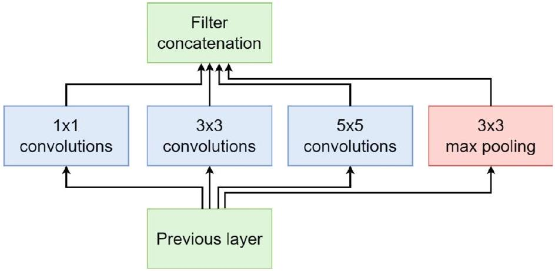
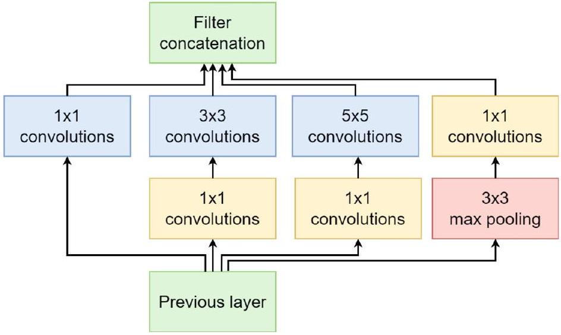
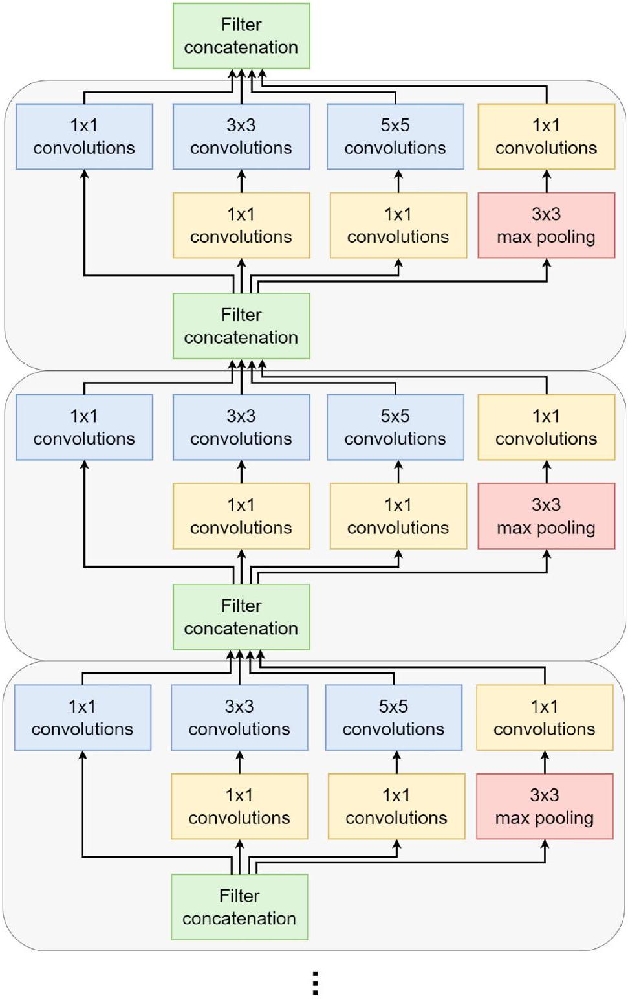
🤖 AI 生圖提示詞
WHAT（骨架）: 左紅：C=256 的胖特徵直接進 5×5，標計算爆炸；註早期模組尚未減肥。右綠：256 → 1×1 壓成 64 → 再 5×5，並註 pooling 後也接 1×1。底部四條並列支路 1×1、1×1→3×3、1×1→5×5、pool→1×1 再 concat；GoogLeNet 堆疊、ILSVRC 2014、減均值、ReLU。 WHY（因果或反直覺）: 多尺度並列是為了同時抓局部團塊與較廣空間相關，但 5×5 在高通道上極貴。最終 Inception 在昂貴核之前用 1×1 降維（通道方向線性變換），讓網路看起來寬、算起來瘦。反直覺：1×1 不是「太小沒有用」，它是最便宜的減肥器；深層更需要大核，所以更需要 1×1。 MUST show（必備要素）: ① 左直接 5×5 很貴；② 右 1×1 瓶頸再 5×5（256→64→5×5）；③ 四支並列再 concat；④ pool 後也有 1×1；⑤ GoogLeNet／ILSVRC 2014；⑥ 反直覺「看起來寬、算起來瘦」。 AVOID（禁止）: 不要畫成編號圓圈流程圖；不要出現 LaTeX 反斜線；不要把 1×1 畫成可有可無裝飾；不要漏掉「先減肥再 5×5」；不要讓左右費用看起來一樣。 STYLE: flat vector, viewBox 720×360, blue theme (#1e40af 深、#2563eb 主、#dbeafe 淺), 白底, Arial, 紅昂貴 #e53e3e、綠瓶頸 #16a34a, 圓角、粗箭頭、無陰影、無漸層。
最終版 Inception 模組（Fig. 14）相對早期設計（Fig. 13）多了什麼？
Inception 用 $1\times 1$ 卷積的主要動機是？
關於 GoogLeNet（Fig. 15）下列何者正確？
為什麼較深、靠近輸出的 Inception 層會配置較多 $3\times 3$ 與 $5\times 5$？
U-Net：收縮–擴張路徑與醫學分割
▼為什麼叫 U-Net：左邊收縮、右邊擴張
U-Net 出自生醫影像分割，是 ISBI 電子顯微鏡神經結構分割挑戰的優勝架構。名字來自對稱的 U 形（Fig. 16）：
- 收縮路徑（contracting path，U 的左邊）：抓語境／上下文（這塊大概是什麼組織）。
- 擴張路徑（expansive path，U 的右邊）：做精準定位（邊界到底在哪一個像素）。
分割任務兩個都要：只知道「大概是細胞」卻對不齊邊緣，或邊緣很銳但看不懂語境，都不夠。
收縮路徑：兩次 3×3 + ReLU，再 2×2 下採樣
收縮路徑走「典型 CNN」節奏。每一步：
- 連續兩次 $3 \times 3$ 卷積，每次後面接 ReLU。
- 用 stride 2 的 $2 \times 2$ max pooling 下採樣。
- 每下採樣一次，特徵通道數加倍，把容量補回來。
擴張路徑：2×2 反卷積，再跳接＋裁切
右邊幾乎是左邊的鏡子。每一步同樣兩次 $3 \times 3$ + ReLU，但不用 pooling，改用 $2 \times 2$ 反卷積（deconvolution）——也叫 轉置卷積（transpose convolution） 或 up-convolution。Fig. 17 就是在示範這種「把特徵圖放大」的運算。每上採樣一次，通道數減半。
上採樣之後，把得到的特徵圖與收縮路徑對應層的特徵圖串接（concatenate）。原始 U-Net 用的是不補邊（unpadded）卷積，每做一次 $3 \times 3$ 空間尺寸會縮小，兩邊對不齊，所以跳接前要先 crop。現代實作也可以改用 padding，讓尺寸從頭對齊、少做裁切。
輸出、損失與訓練細節
最後輸出與輸入空間尺寸相同；最後一張特徵圖有 $c$ 個通道（一類一通道），接 softmax。損失是 cross-entropy，因為這是逐像素分類。原作在 Caffe 上訓練；生醫圖塊很大，batch size 設為 1。動量與 VGG 相同，取 0.9，讓收斂穩一點、少震盪。
U-Net 還帶出後繼者，例如把 U 改成 Y 形的 Y-Net。
口語小結：左收縮（語境）＋右擴張（定位）＝ U；跳接是 concat，原始版因 unpadded conv 要 crop；$3 \times 3$+ReLU 成對出現；放大靠 $2 \times 2$ 轉置卷積（Fig. 17）；戰場是醫學分割。
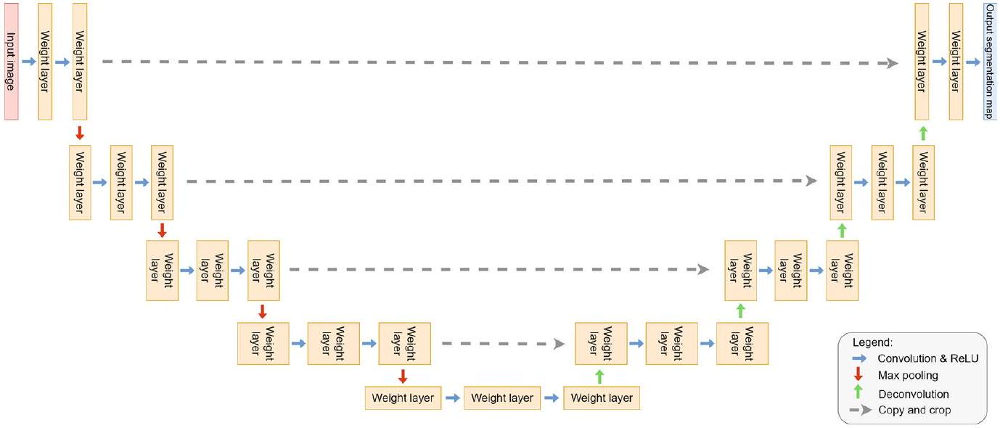
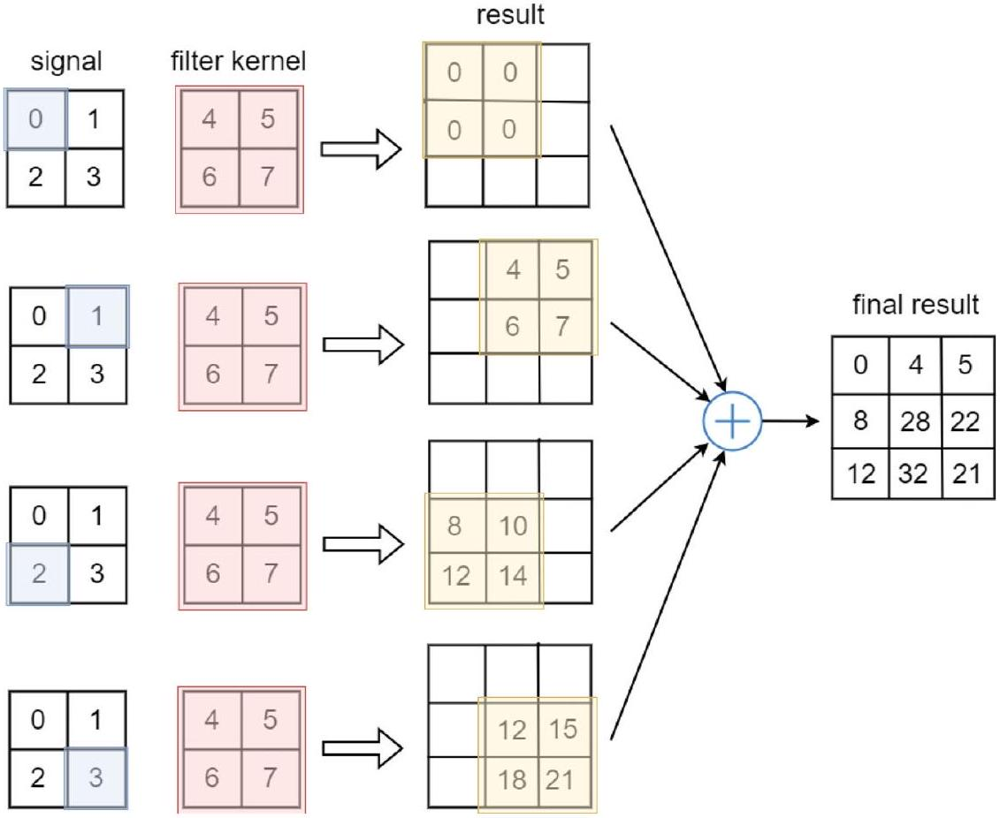
🤖 AI 生圖提示詞
WHAT（骨架）: 對稱 U 形。左藍收縮：64→128→256→512，格子由大變小、通道加倍（語境）。底中瓶頸。右綠擴張：512→256→128→64，格子由小變大（定位），標 2×2 轉置卷積。三條橘跳接箭頭寫 concat 細節；註 unpadded 要 crop。底部：分割要語境+像素邊界，輸出同尺寸。 WHY（因果或反直覺）: 只收縮會知道「這是細胞」卻對不齊邊緣；只保高解析又缺語境。U-Net 左邊抽上下文、右邊還原位置，跳接把左邊還沒被池化洗掉的細節 concat 到右邊。反直覺：U 形不是美學，是「深網把圖縮太小會丟邊界，所以把細節借回來」。 MUST show（必備要素）: ① 左收縮由大到小、右擴張由小到大；② 跳接 concat（不是相加）；③ 語境 vs 定位標籤；④ 轉置卷積上採樣；⑤ crop／unpadded 一句；⑥ 反直覺「細節借回來」。 AVOID（禁止）: 不要畫成編號圓圈流程圖；不要出現 LaTeX 反斜線；不要把 skip 畫成殘差加法；不要讓左右尺寸梯級相反；不要漏掉 concat 與 crop。 STYLE: flat vector, viewBox 720×360, blue theme (#1e40af 深、#2563eb 主、#dbeafe 淺), 白底, Arial, 綠擴張 #16a34a、橘跳接 #ea580c、紅警示 #e53e3e, 圓角、粗箭頭、無陰影、無漸層。
U-Net 收縮路徑與擴張路徑的分工是？
原始 U-Net 在 skip connection 時要先 crop，原因是？
U-Net 擴張路徑用來放大特徵圖的運算是？（見 Fig. 17）
U-Net 最初主要應用與輸出形式是？
ResNet、DenseNet 到結論：殘差、密集連接與複合縮放
▼退化問題：層數超過約 20 層，訓練準確率不升反降
經驗上，網路大概 超過 20 層 之後，再加深往往讓訓練準確率先飽和、再變差。這叫 degradation（退化），直覺上很怪：理論上更深的網路至少不該比淺的差——多出來的層大可學成恆等映射，表現應能「複製」淺模型。實務上多加層卻常常把訓練誤差加高。Fig. 19 把 ResNet 與「純 CNN／VGG 式直筒」對照，就是在講這條路後來怎麼被改寫。
殘差學習：學 $\mathcal{F}(x)=\mathcal{H}(x)-x$，讓 $\mathcal{H}=\mathcal{F}+x$
ResNet 提出 deep residual learning。一般堆疊層被期待直接學目標映射 $\mathcal{H}(x)$；ResNet 改讓一組層去學相對輸入的殘差。令 $\mathcal{H}(x)$ 為想要的底層映射，改學
$$ \mathcal{F}(x):=\mathcal{H}(x)-x , \tag{9} $$
因此
$$ \mathcal{H}(x)=\mathcal{F}(x)+x . \tag{10} $$
實作就是 Fig. 18 的 residual block：主路學 $\mathcal{F}$，旁路 shortcut（恆等捷徑） 把 $x$ 加回來。整網由多個殘差塊堆成。
捷徑的關鍵好處是反向傳播時梯度比較走得通：恆等路讓梯度能較直接從深層回到淺層，減輕梯度消失。經驗上也顯示：優化殘差 $\mathcal{F}(x)$ 比直接優化沒有參考點的 $\mathcal{H}(x)$ 容易。常見變體依層數命名：ResNet-18／34／50／101；筆電級任務往往 ResNet-18 就夠。當代很多研究不再天天發明新骨幹，而是假設 ResNet（或 LeNet 這類標準 CNN）當 backbone，把力氣放在新損失。
DenseNet：改成串接，連線數 $l(l+1)/2$
CNN 若在較早層與較後層之間加短接，往往能更深、更準、更好訓。DenseNet 把這件事做滿：在 dense block 裡，每一層以 feedforward 方式接到後面所有層（Fig. 20）。可以看成 ResNet shortcut 的極端版：ResNet 主要連「下一層並做加法」；DenseNet 連「後面每一層，並做串接」。
標準 $l$ 層網路大約有 $l$ 個權重矩陣（只連相鄰層）。DenseNet 的 $l$ 層則有
$$ \frac{l(l+1)}{2} $$
個權重矩陣——每一層都直接連到它的所有後繼。好處包括：捷徑多、梯度更好流；特徵重複使用；層數不必很多就能保持表達力，參數反而可能較省。
ResNet 的遞推是加法（式 (11)），DenseNet 改成把前面所有輸出 concat 再送進 $\mathcal{F}_{\ell}$（式 (12)）：
$$ x_{\ell}=\mathcal{F}_{\ell}\bigl(x_{\ell-1}\bigr)+x_{\ell-1} , \tag{11} $$
$$ x_{\ell}=\mathcal{F}_{\ell}\bigl(\bigl[x_{0}, x_{1}, \ldots, x_{\ell-1}\bigr]^{\top}\bigr) . \tag{12} $$
$\mathcal{F}_{\ell}$ 在塊內通常是 batch norm + $3 \times 3$ 卷積 + ReLU（也可能含 pooling）。每層卷積產出的特徵圖數量叫 growth rate $k$。若塊的輸入通道是 $k_0$，則第 $\ell$ 層會看到 $k_0+k(\ell-1)$ 張輸入特徵圖。經驗上 $k=12$ 這類不大的成長率就常常夠用。
Fig. 21：多個 dense block 串起來；塊與塊之間用 transition layer 控複雜度——batch norm、$1 \times 1$ 卷積、再 $2 \times 2$ average pooling。最後一段 transition 含平均池化與全連接 + softmax 做分類。
EfficientNet 與 ConvNeXt：縮放方式，以及 CNN 對上 Transformer
DenseNet 之後，EfficientNet（2019）提出對深度、寬度、解析度一起做複合縮放（compound scaling），用較少參數衝到當時很強的精度。ConvNeXt（2022）則把 CNN 設計現代化，好跟 Transformer（見 Chap. 9）競爭——重點是：進入注意力模型的時代，CNN 並沒有過氣。
本章結論：積木是 conv＋detector＋pool，再看經典架構怎麼疊
回到整章主線：CNN 專攻網格資料（影像），用卷積 → 偵測器（激活）→ 池化當一層的三階段，而不是把圖攤平成全連接。從 LeNet、AlexNet 往後，VGG、Inception、ResNet、DenseNet 分別在深度、效率、特徵重用上加碼。Transformer 在很多領域已成主流，但 CNN 在電腦視覺、醫學影像、邊緣裝置上仍很關鍵，也是讀懂現代深度學習的地基。
口語復盤：超過約 20 層會退化；ResNet 學殘差 $\mathcal{F}=\mathcal{H}-x$（式 (9)(10)），捷徑幫忙傳梯度；DenseNet 改 concat（式 (11) vs (12)），連線 $l(l+1)/2$，成長率 $k$，transition 用 1×1＋avg pool；EfficientNet 複合縮放，ConvNeXt 讓 CNN 跟 Transformer 打；積木仍是 conv＋detector＋pool。
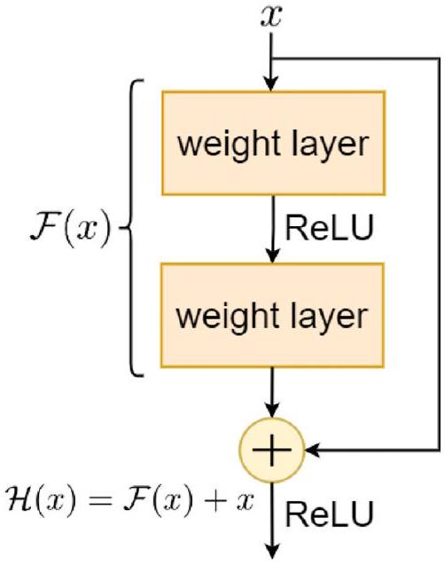
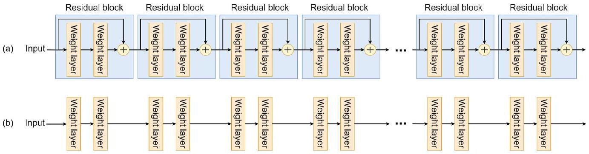
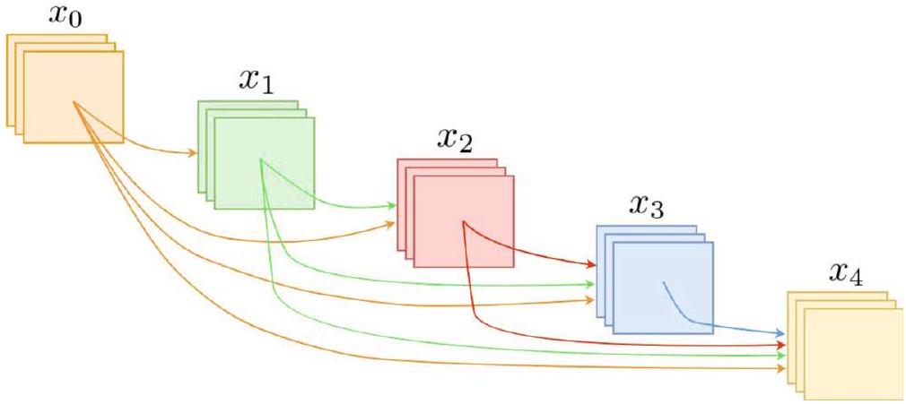
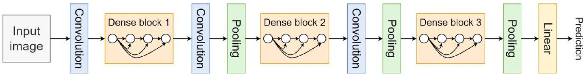
🤖 AI 生圖提示詞
WHAT（骨架）: 三欄對比。左紅直筒：層愈堆愈窄、訓練誤差折線往上，標 ≈20 層起退化。中綠殘差塊：主路 F(x)、藍捷徑 x、綠圓圈加法 +，得到 H=F+x。右藍 DenseNet：x0／x1／x2 併成 [x0 x1 x2] concat 再進 Fℓ，標 l(l+1)/2、成長率 k、transition 1×1+avg pool。底部：加 vs concat；EfficientNet／ConvNeXt 一句。 WHY（因果或反直覺）: 理論上更深可學恆等、不該比淺的差，但直筒超過約 20 層訓練誤差不降反升（退化）。ResNet 讓層去學殘差，捷徑把 x 加回來，多出來的層可接近 0 殘差，梯度也好走。DenseNet 把捷徑做滿：前面所有層 concat，特徵重用、連線數 l(l+1)/2。反直覺：層數愈多愈好不成立——沒捷徑時多出來的層常常學不會恆等。 MUST show（必備要素）: ① 左退化上升的誤差折線；② 中 F(x)+x 加法圓；③ 恆等捷徑；④ 右 concat 不是加；⑤ 約 20 層；⑥ 反直覺「多層學不會恆等」。 AVOID（禁止）: 不要畫成編號圓圈流程圖；不要出現 LaTeX 反斜線（F(x)+x 用 Unicode）；不要把 ResNet 畫成 concat、DenseNet 畫成加法；不要讓直筒看起來比殘差更成功；不要漏掉退化。 STYLE: flat vector, viewBox 720×360, blue theme (#1e40af 深、#2563eb 主、#dbeafe 淺), 白底, Arial, 紅退化 #e53e3e、綠殘差 #16a34a、橘對照 #ea580c, 圓角、粗箭頭、無陰影、無漸層。
- 拉 $x$、$\mathcal{F}$（皆 $[-2,2]$），數線與堆疊段即時更新。
- 按「F＝0」看捷徑單獨成立；$\mathcal{H}$ 必須與 $x$ 重合。
「退化問題」（degradation）指的是？
殘差學習式 (9)(10) 的含義是？
DenseNet 相對 ResNet 的連接方式，下列何者正確？
EfficientNet 的複合縮放（compound scaling）與 ConvNeXt 的訊息，正確的是？